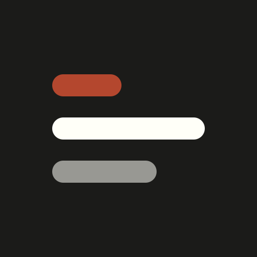

Org mode and Denote, in the browser.
A web interface to a Denote
library. Point it at your denote-directory and every note becomes
a page.
Nothing is converted and nothing is imported. The files on disk stay exactly what Emacs wrote, and Emacs can keep editing them while you read and write the same notes from a browser or a phone.
#+title: becomes its title, and its keywords become tags.denote: links resolve by identifier and become bidirectional, so every note shows what points at it.denote-journal does — the day comes from the identifier, not the front matter.It is built on SilverBullet, which is extensible through plugs — but a plug cannot register a language, and Org needs a real parser. So this is a fork rather than an add-on.